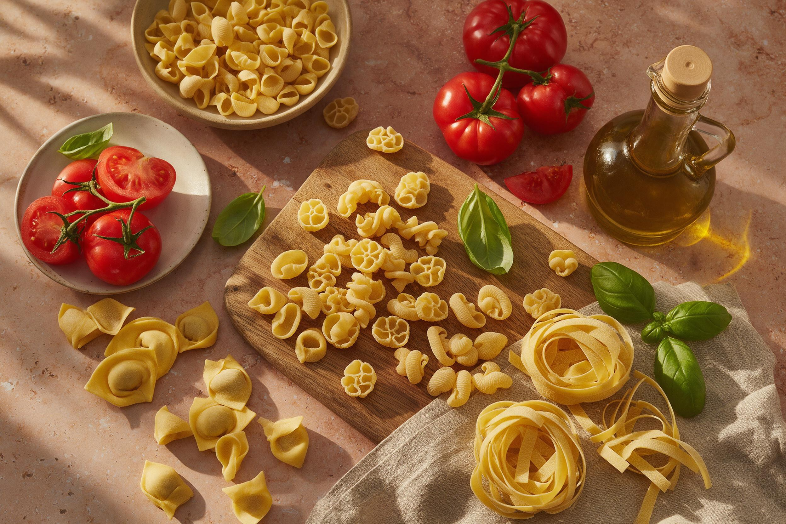
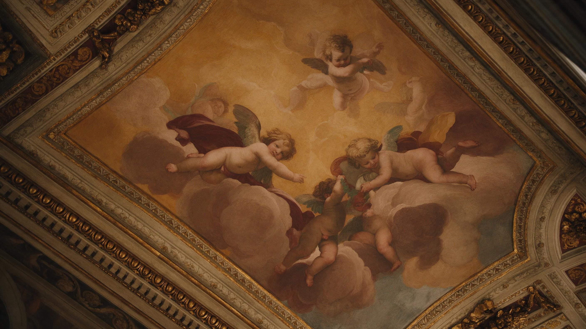
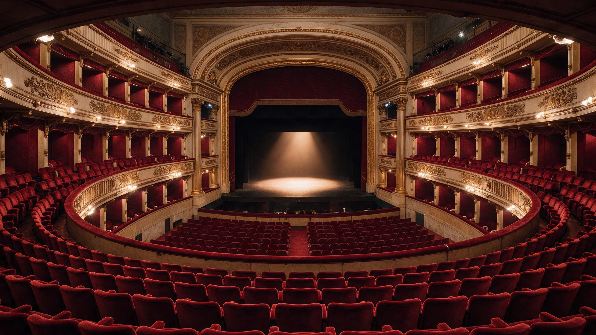

Six sessions inside one Italian world.
Short thematic courses. One theme, one faculty host, any level. $390 for six sessions of sixty minutes.
La Cucina, L'Arte, L'Opera.

Cultural · Any levelLa Cucina
Six live cultural sessions on the vocabulary and history of the Italian table, pasta, pane, vino, caffè, and the sacred rituals of the family meal.
- Giulia
- 6 sessions x 60 min
- $390

Cultural · Any levelL'Arte
Six live cultural sessions on the Italian language of art history, from Giotto to Caravaggio, with the vocabulary that lets you read a museum wall label in the Uffizi.
- Chiara
- 6 sessions x 60 min
- $390

Cultural · Any levelL'Opera
Six live cultural sessions on Verdi, Puccini and Rossini.
- Alessandro
- 6 sessions x 60 min
- $390
La Cucina · six sessions
01La geografia del cibo60 min
How Italy's twenty regions produced twenty cuisines. The north-south axis of butter vs olive oil, rice vs pasta, wine vs beer.
02La pasta, mille forme, mille storie60 min
Four hundred pasta shapes. Why bucatini all'amatriciana can only be bucatini. The unwritten pasta rules.
03Il pane e il forno60 min
The vocabulary of bread, pane sciapo, pagnotta, michetta, focaccia. The village bakery as institution.
04Il vino italiano60 min
Twenty regions, twenty wine cultures. Reading a label, understanding DOC and DOCG, the ritual of the tasting.
05Il caffè, un rito60 min
The Italian relationship with coffee, from Trieste to Naples. The bar, the moka, the caffettiera.
06Il pranzo della domenica60 min
The most sacred meal in Italian life. Six courses, three hours, one grandmother. Cultural graduation.
L'Arte · six sessions
01Il vocabolario del dipinto60 min
The Italian vocabulary of painting, tela, tavola, affresco, tempera, olio, sfumato, chiaroscuro.
02Giotto e il Trecento60 min
Giotto and the birth of Western perspective. The vocabulary of pre-Renaissance devotion.
03Il Quattrocento, Firenze60 min
Brunelleschi, Donatello, Botticelli. Reading Vasari on the Uffizi masters.
04Il Cinquecento, Roma60 min
Michelangelo, Raphael, Bramante. The Sistine Chapel and Saint Peter's in their own vocabulary.
05Caravaggio e il Barocco60 min
The Caravaggio revolution, luce, ombra, realismo. Reading a Bellori page.
06Bernini e la Roma barocca60 min
Bernini's Rome, Piazza Navona, Piazza San Pietro, the language of Baroque sculpture. Cultural graduation.
L'Opera · six sessions
01La nascita dell'opera60 min
Florence, 1600, the Camerata de' Bardi and the invention of opera. Vocabulary of stagecraft.
02Rossini, il Barbiere di Siviglia60 min
Reading and singing along to Largo al factotum. Comic opera vocabulary.
03Verdi, La Traviata60 min
Reading Libiamo ne' lieti calici. Verdi as national poet.
04Verdi, Aida e Nabucco60 min
The political operas. Va, pensiero as second national anthem.
05Puccini, La Bohème60 min
Reading Che gelida manina. The verismo revolution and the vocabulary of Parisian bohemia.
06Puccini, Turandot60 min
Reading Nessun dorma. The final Puccini opera and its cultural afterlife. Cultural graduation.